boymaas.nl atelier: three variants from three seeds
Click a title to open the live page. Hold space to see the hidden figure; the footer has the rain toggle. Screenshots below: surface, figure revealed, mobile.
1. The chartreuse colony · revealed
Chartreuse-cream ground, olive ink, 24 hues living only in the cells. HighLife automaton on a 6px grid, four ink workers passing tokens from post rows to a sitter's pile. Headings as # prompt lines. Figure: concentric circles, axis, tablet, five stations, "AS ABOVE / SO BELOW" in a 3x5 pixel font.
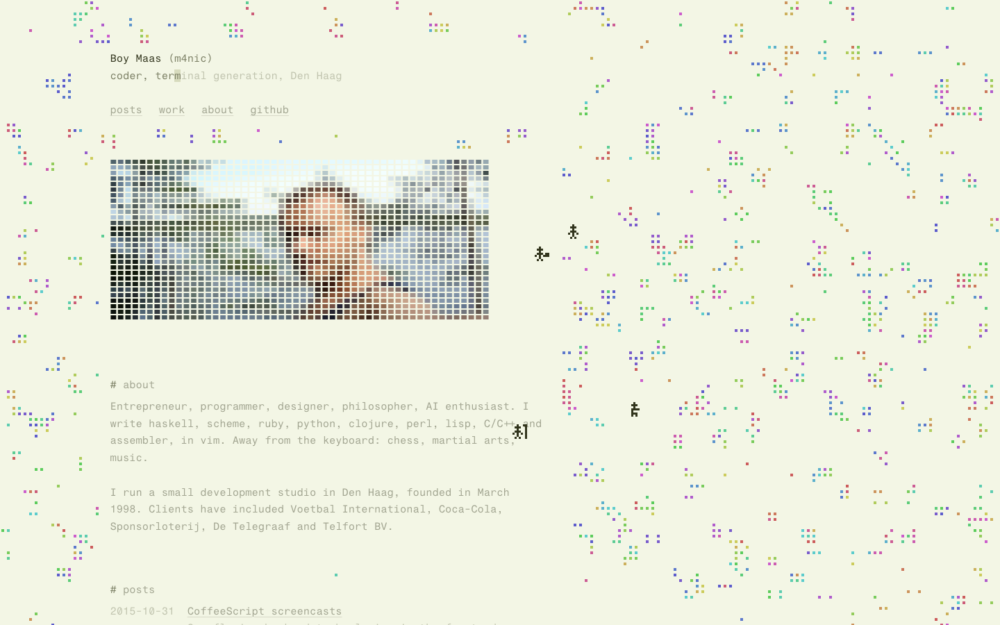
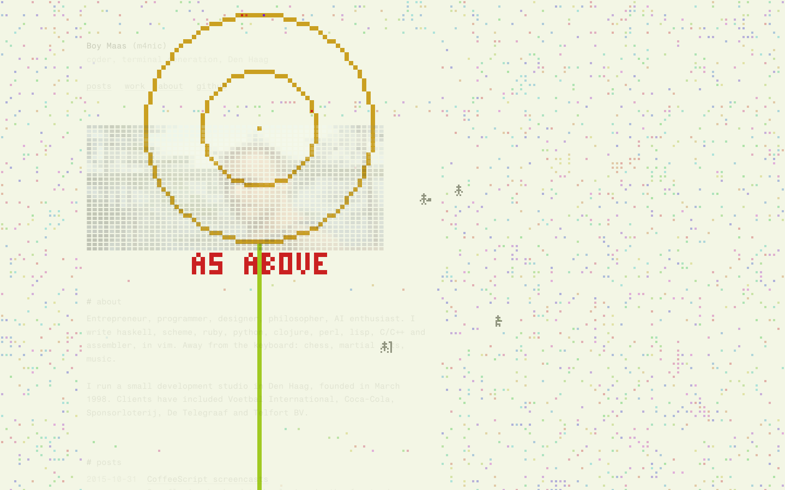
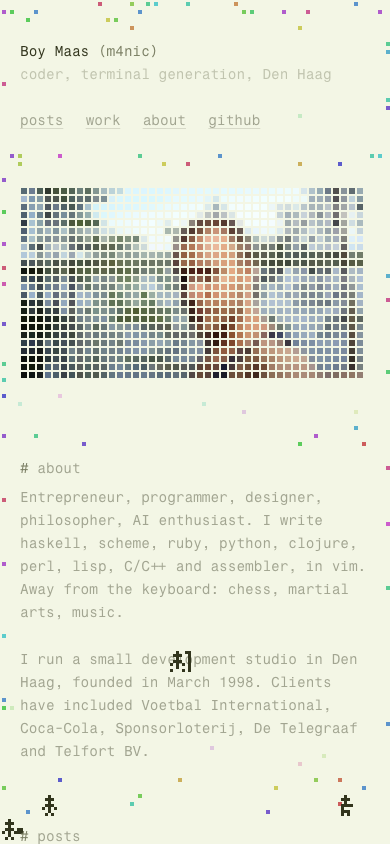
full page
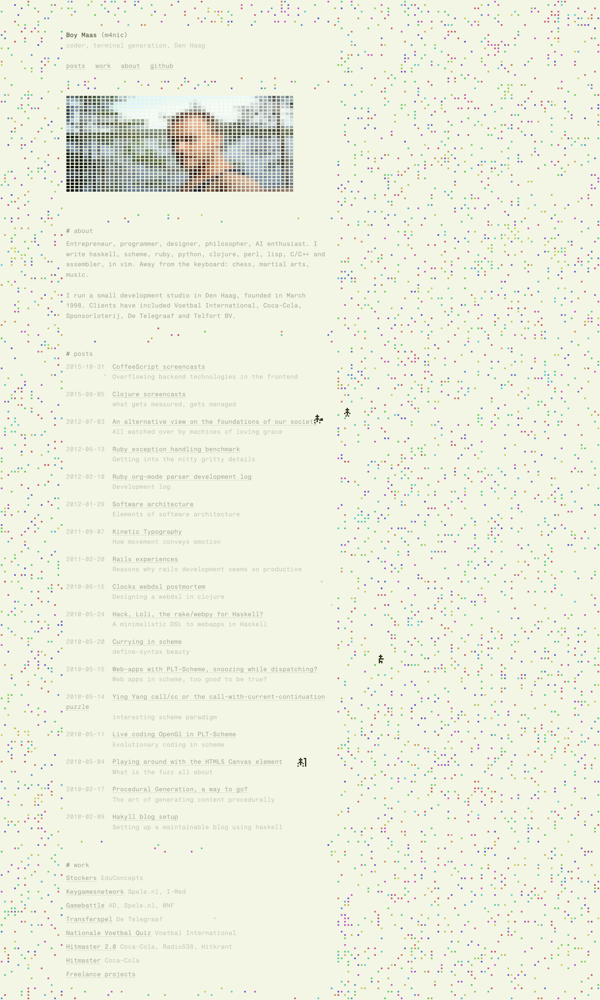
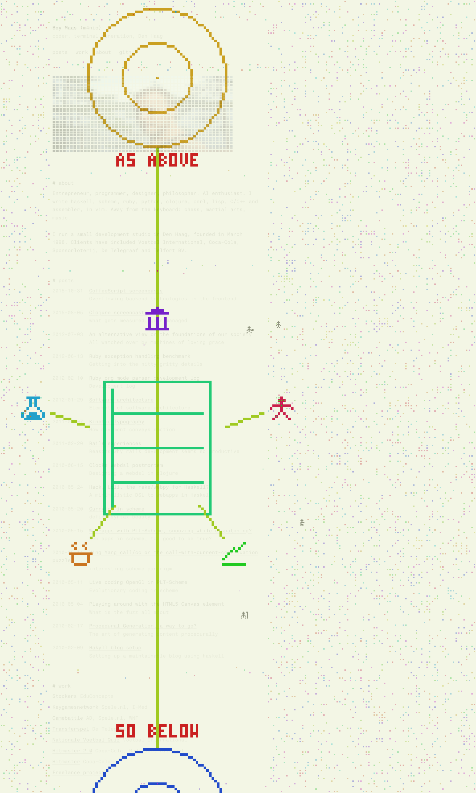
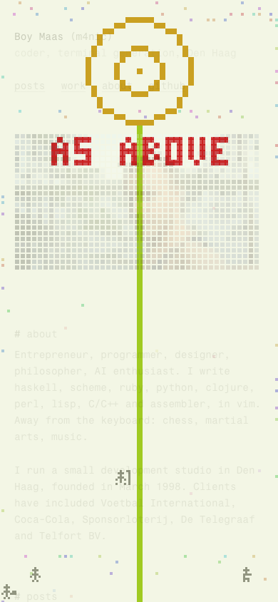
2. The doubling field · revealed
Pale olive-lichen ground, twelve hues on a warm-to-cool arc, no violets. Cells inherit hue as they breed, so the field drifts from amber on the left to blue on the right. Column set left of centre so the colony owns open ground. Figure: two circles in a ring, a ruled tablet in the vesica, five coloured stations.
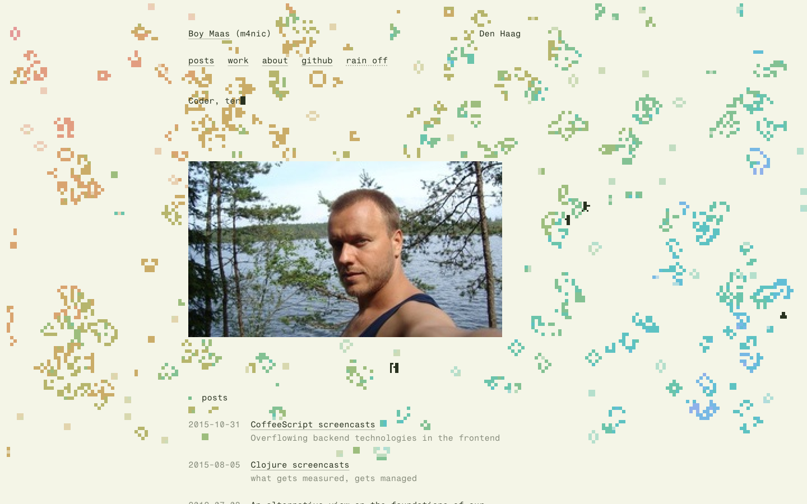
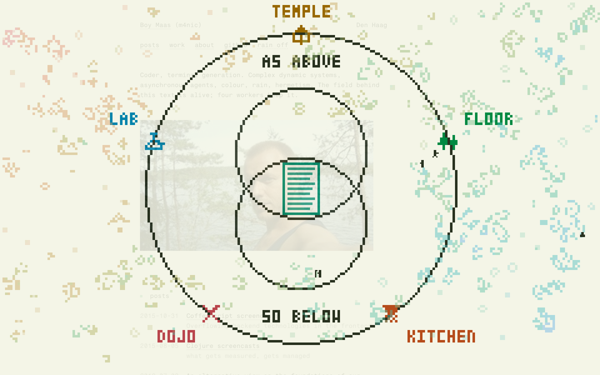
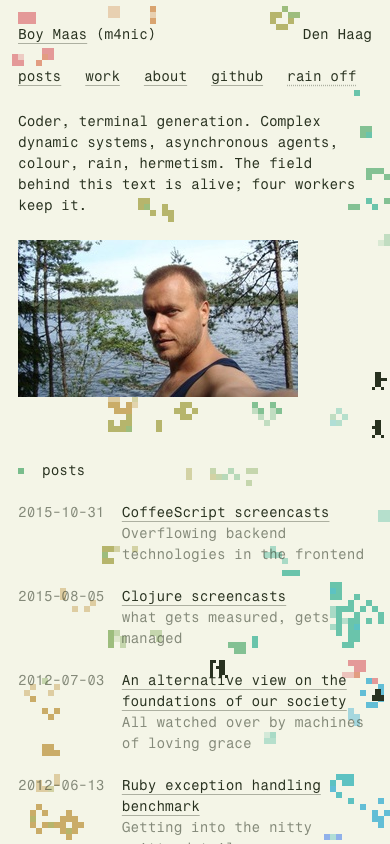
full page
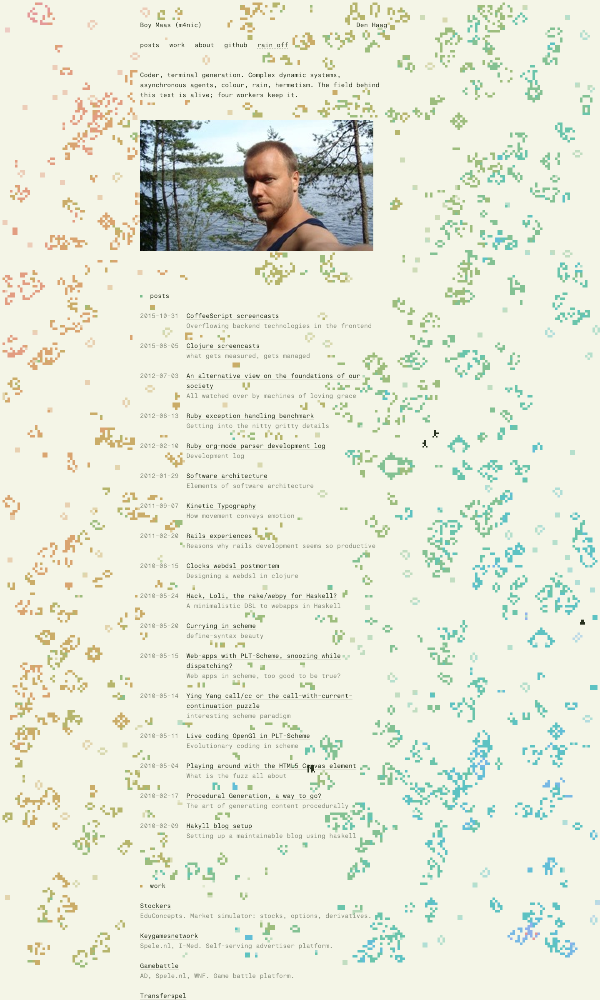
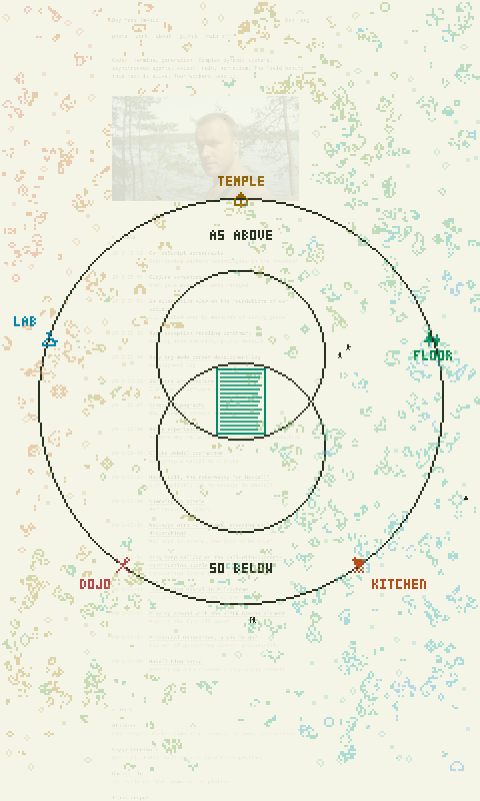
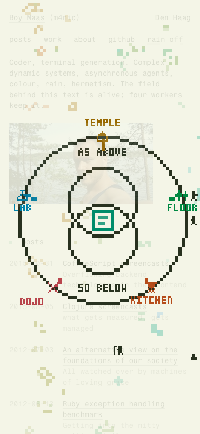
3. As 6 is to 9 · revealed
Warm sand ground, nine hues stepping 40 degrees from amber, one dark ink. 7px Life cells in bolder clusters; four chunky ink workers. Portrait shown whole, dissolving on scroll. Figure: two rings with the lower half turned 180 degrees, station glyphs in colour (lab, dojo, kitchen, temple, trading), "SO BELOW" mirrored.
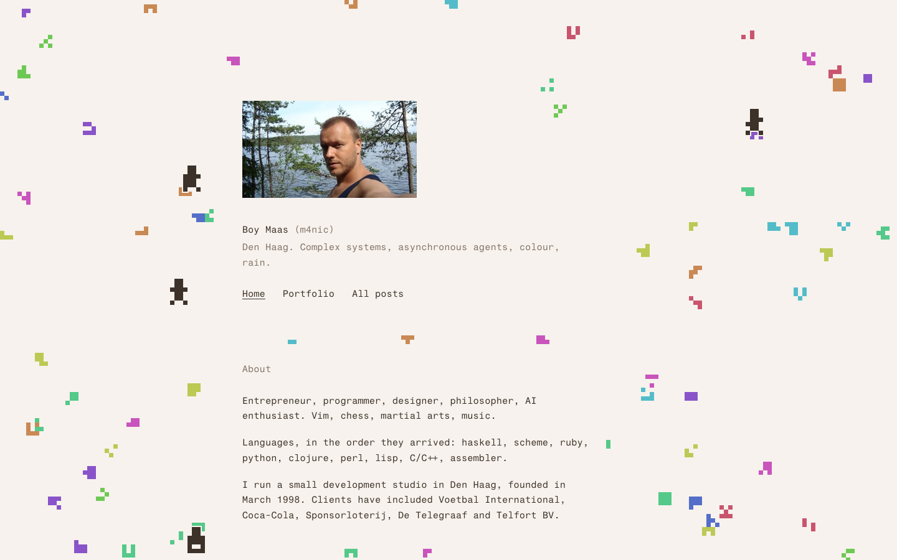
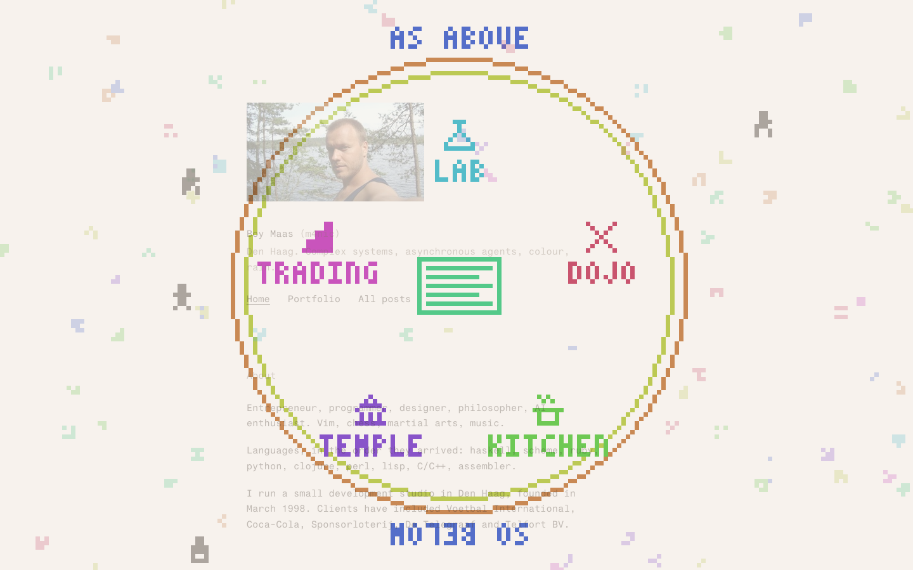
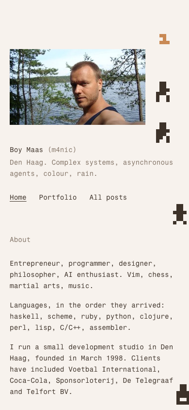
full page
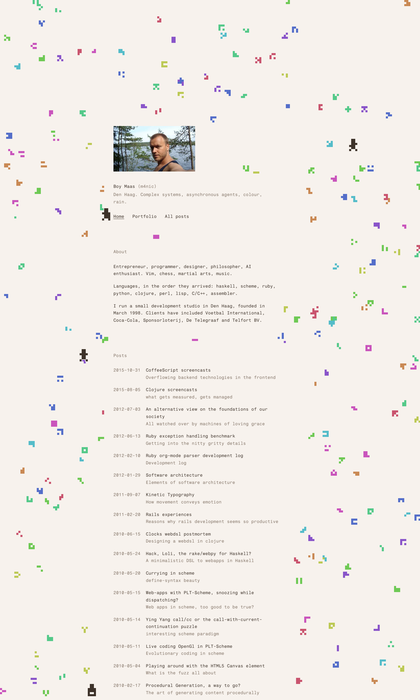
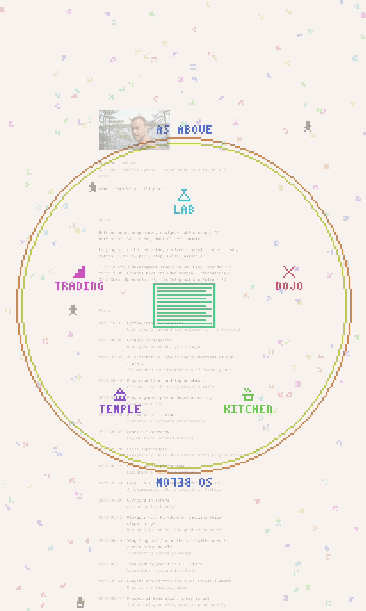
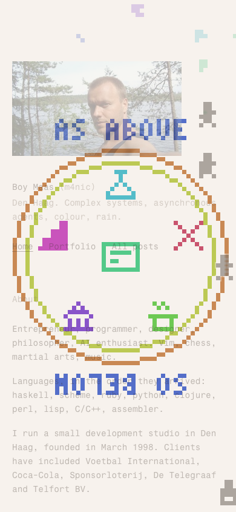